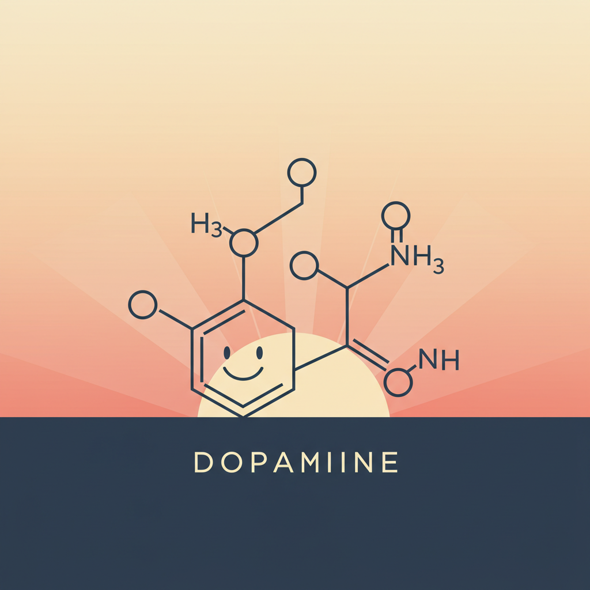
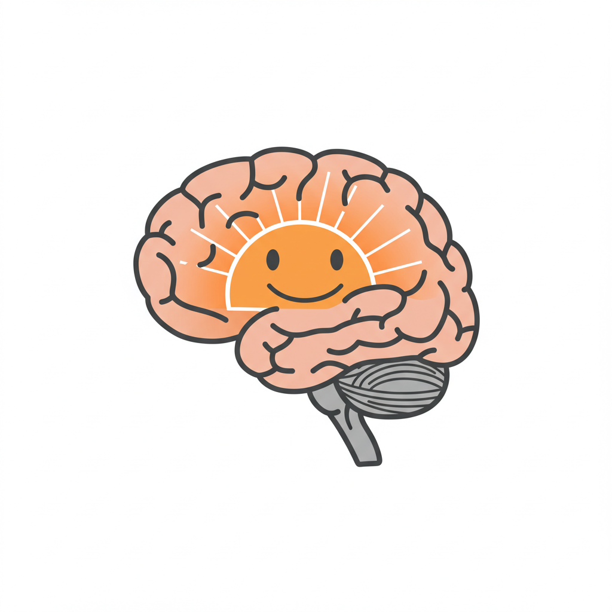

This complete self-improvement app is designed to help you structure your life for success, inspired by the world's best psychologists and self-help teachers, such as Jordan Peterson and Hamza Ahmed. Below, you'll find tools to set goals, track progress, and align your daily actions with your long-term vision.
Dopamine is Motivation: Dopamine is the brain's reward chemical, and it drives motivation and focus. However, dopamine is a limited resource. You must manage it wisely by prioritizing tasks that align with your goals and avoiding distractions.

Key points about dopamine levels throughout the day: Morning peak: Dopamine is usually highest when you first wake up, contributing to alertness and motivation. Circadian rhythm: This natural fluctuation in dopamine levels is regulated by your body's circadian rhythm. Evening decline: As the day progresses, dopamine levels gradually decrease, making it easier to wind down and prepare for sleep.

We want to utilize our maximum dopamine levels to do meaningful work when we are fully rested to make our best progress.
Beneficial Tasks Cause Pain Initially: Many tasks that are good for you (e.g., exercising, learning a new skill) feel painful or boring at first. However, if you push through the initial discomfort, you'll experience a dopamine burst as you make progress. Over time, these tasks become self-rewarding as you build skills and see results.Skills Are Self-Rewarding: The better you get at something, the more rewarding it becomes. This is because your brain releases dopamine when you achieve mastery, unlocking your creative potential and being a producer. Focus on building skills that align with your goals, and you'll find motivation naturally follows.